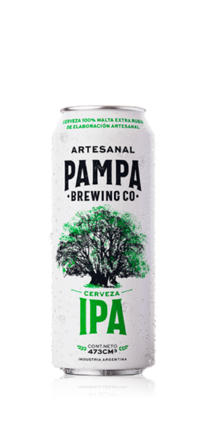
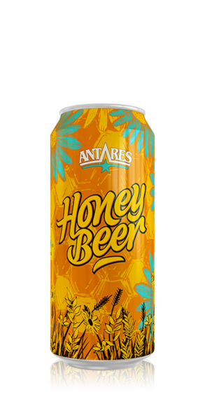
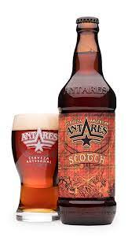
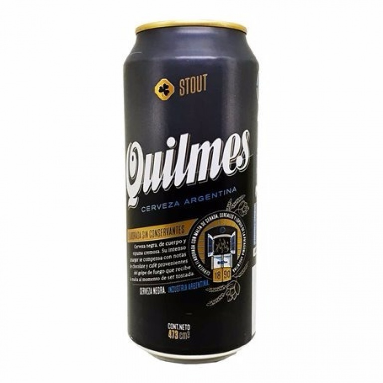

Una IPA es una cerveza de alta graduación alcohólica (entre 5º y 7º), amargor y aroma intensos y cierta complejidad en el paladar. El nombre hace referencia a India Pale Ale, un estilo cervecero que se caracteriza por la alta concentración de lúpulo. La mejor a mi parecer es:
Las American Pale Ale (APA) actuales se parecen poco a sus antecesoras inglesas, con las que comparten el perfil seco y un limpio final amargo. Son cervezas pálidas, de carbonatación media, moderadas en alcohol (4,5-6,2%) y equilibradas en saborLa mejor a mi parecer es:
Las cervezas Honey se elaboran con miel, la que les aporta a un sabor dulce y azúcares fermentables que elevan el contenido alcohólico de la cerveza.La mejor a mi parecer es:
Tienden a ser ligeras, aunque el sabor y el aroma sigan siendo intensos. Contienen un nivel bajo de alcohol. La mejor a mi parecer es:
Se caracteriza por ser sumamente oscura casi negra, bien tostada y con un gran porcentaje de alcohol. La mejor a mi parecer es:
Cerveza de fermentación alta, muy oscura y con un sabor muy intenso. Su color, casi negro, se consigue utilizando malta muy tostada.La mejor a mi parecer es: